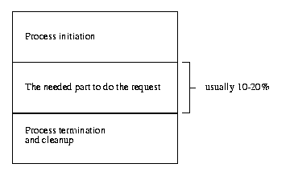
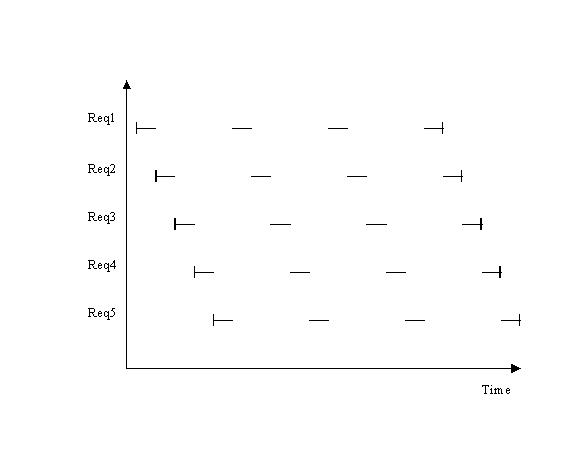
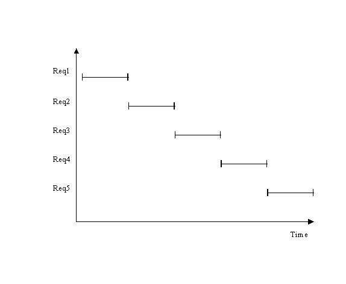

| MidWay Documentation | ||
| Prev | Top | Next |
MidWay is a functions broker, as opposed to an Object broker such as CORBA, and DCOM. The main difference is the statelessness of functions. Many may wonder why MidWay makes a point of being less than CORBA, or way I didn't use CORBA instead of making MidWay.
On occasion when I talk to Object Orientation (OO) evangelists, I get the feeling that they think that:
Neither are true.
I love OO as well, and when the part of reality you're working on models nicely with OO, life is sweet. However OO do have some problems with respect to scaling.
There are overheads with object creation, and destruction.
Objects require several several request/response between the client and the
ORB/Object. A minimum of assigning an object (1) calling a method(2) and
unassigning the object (3).
If an object don't store state, its methods are by definition functions, we here consider functions, procedures and services to be identical. In order to be statefull both/all parties to the object must know that the relationship exists. I modern ORBs such as CORBA and DCOM this is done by having a socket connection, usually over TCP/IP. While the CORBA crew has flagged with possibility of millions of objects on an ORB, you can't have millions of sockets on a single hosts.
Another problem is that having methods invite you to think that there is no overhead in method calls. Using IPC the overhead with MidWay is 2-10 ms. Assuming that CORBA and it likes have the same and you need to do 10 method calls, you may have 1/10 of a second overhead. These days 1ms is a timeslice scheduling wise and enought time for the CPU to do 1000000 instructions. Service calls are not API calls, and their number should be kept as low as possible. They should be a complete high level operation.
Mainframe evangelists claim, rightfully, that you can never have as many users (with telnet) as you can on a mainframe. Consider unix processes to be objects, every user has a minimum of one object that they interact with (the shell). The shell has state by userid, groupid, umask, cwd, env vars and private (shell) vars. It provide methods to alter this state, newgrp, umask, cd, setenv etc. as well as providing an anonymous method for creating new objects. You see here just the 1:1 ration problem eating away RAM and the kernel housekeeping task grows proportionally to the number of processes. Remember that with the more and more processes you have (that do work) each must do a smaller and smaller slice for you to avoid spending all your CPU resources. However with each process doing smaller and smaller piece each the amount of work needed for scheduling calculations grow until the OS is spending the majority of CPU resource on scheduling. Classical thrashing.
Another point made by mainframe evangelists are that is it ludicrous to send a packet for every key stroke, as is done in a telnet session. It just gets worse in graphical environment, X11 clients are sent both key-press and key-release events, and may ask for a storm of pointer (mouse) movements events.
The reason the mainframe could in the 70's handle a couple of thousand attached terminals, was that each 3270 terminal are loaded with a form, and handle all fill out for form fields, only send the completed form when you hit the send button. A web browser has deliberately copied this, and this is exactly the way a html form work. You only send the filled in form to a CGI program. Here we see the difference in the server side. On the mainframe the form is sent to a service in a TP monitor like CICS. On Unix the approach has been to create a new process to handle the form data that terminate after completion.
The forking for every html form sent to the server is a known problem with scaling, and a number of solutions have been provided to do FastCGI. You have the FastCGI project, mod_perl, and PHP. both the latter embeds an interpreter in apache and thus avoid forks.
The extra overhead with forking are dismissed by some web developers by the argument that it depends on the ration between initial and termination work to the amount of real work.

This is true but a html form or "screen" should contain relatively few fields. This a user friendliness issue, a form with to many fields become crowded and cluttered. Normally the actual work is quite small to the startup cost.
Consider what the cost of forks and execs really are. On fork the OS must either created or copied data measured in kbytes, pretty fast, but keep it in mind. My 450 Mhz K2 running Linux does 800000 forks() a second. This has a lot to do with Linux doing copy-on-write on the memory pages, on other Un*xes the entire data area is copied on fork. However if you are working on a web server that can have 1000 hits a second, you're spending 0.2% in fork alone. If you're working on system that must do a 1000 hits a second, every % count, a lot.
Exec's are much worse. On my machine described above it maxes out on 150 execs a second, on e smallest possible program, and 54 execs on a perl process with nothing to do. Try the following on you machine:
eggis1 terje ~/test 88> cat noop.c #include#include #include main() { exit(0); }; eggis1 terje ~/test 89> cat noopexec.sh #!/bin/tcsh @ i = 0 while ($i < 100 ) ./noop @ i ++ end eggis1 terje ~/test 90> /usr/bin/time ./noopexec.sh 0.29user 0.49system 0:00.79elapsed 98%CPU (0avgtext+0avgdata 0maxresident)k 0inputs+0outputs (7204major+4388minor)pagefaults 0swaps eggis1 terje ~/test 91> /usr/bin/time ./noopexec.sh 0.28user 0.52system 0:00.81elapsed 97%CPU (0avgtext+0avgdata 0maxresident)k 0inputs+0outputs (7204major+4388minor)pagefaults 0swaps eggis1 terje ~/test 92> /usr/bin/time ./noopexec.sh 0.22user 0.55system 0:00.77elapsed 99%CPU (0avgtext+0avgdata 0maxresident)k 0inputs+0outputs (7204major+4388minor)pagefaults 0swaps eggis1 terje ~/test 93> cat ./perlexec.sh #!/bin/tcsh @ i = 0 while ($i < 100 ) perl -e '' @ i ++ end eggis1 terje ~/test 94> /usr/bin/time ./perlexec.sh 0.85user 0.97system 0:01.84elapsed 98%CPU (0avgtext+0avgdata 0maxresident)k 0inputs+0outputs (20704major+5718minor)pagefaults 0swaps eggis1 terje ~/test 95> /usr/bin/time ./perlexec.sh 0.87user 0.98system 0:01.89elapsed 97%CPU (0avgtext+0avgdata 0maxresident)k 0inputs+0outputs (20704major+5718minor)pagefaults 0swaps eggis1 terje ~/test 96> /usr/bin/time ./perlexec.sh 0.93user 0.93system 0:01.87elapsed 98%CPU (0avgtext+0avgdata 0maxresident)k 0inputs+0outputs (20704major+5718minor)pagefaults 0swaps eggis1 terje ~/test 97>
The primary cause we actually see here; it is the page faults. Page faults occur even if the programm is cache is memory. The reason being that the newly created process has not yet mapped its memory space to the cached pages in memory.
In real life programs the problems becomes even bigger since starting a large program usually means getting data from disk. The memory area of a process is divided up in many segments. Some of these are text , uninitialized data, initialized data, heap, and stack. Heap is used for dynamic memory allocation and like the stack is empty on start up. Text is the code, and if there already is another instance of this program running, or it was in near past, the text already is in memory. Uninitalized data only require allocation of pages in physical memory or swap, this too is very fast. The big bad wolf is initialized data. Initialized data is everything like int i = 9; or printf( "string"); in C/C++. The thing is that on exec, the initialized data must be fetched from disk, of copied from disk cache, of the program is there. For reasonable large programs this quickly becomes megabytes. In fact gcc tries to make code rather than initialized data in order to avoid this as much as possible, or at least avoid it until needed. Interpreters like perl usually has large initialized data segments.
They key is to have the program handling the request up and running and ready to handle the request when it comes, and that it will handle more than one request in its lifetime (It should handle infinite request in theory.). MidWay provide this, in a very general approach in that the services may be used from WIN32 apps, gnome apps, tcl/tk, as well as in plain html.
Another strange speedup you get when using a SRB is that the average response time is halved. Consider an example where we have n=5 CGI requests, and that it takes s=4 time slices to do the actual work. If we fork of n processes to handle the requests the scheduling looks like this(single CPU):

and the average response
time rt = (n+1/2)*s
or O(n).
If a single program handles all the
requests one at a time:

Average response time is now rt = s*n/2
or O(n/2).
This is actually a classical OS scheduling problem. My professor in Operating Systems did make this argument to show that preemptive round robin was not the optimal scheduling tactic. At the time I closed my ears and considered that anything but preemptive was unacceptable, and historic. I think most of my fellow students did too.
It is this statelessness that makes it scalable. The CORBA camp has come to the conclusion that while CORBA does what it was intended to do, it scales poorly. A function passing TP monitor is the tested and tried, it scales, and since html/CGI is also stateless, it integrates better to web solutions.
Always keep in mind that the principle design goal for MidWay is speed and throughput.
| Prev | Top | Next |
| © 2000 Terje Eggestad | ||